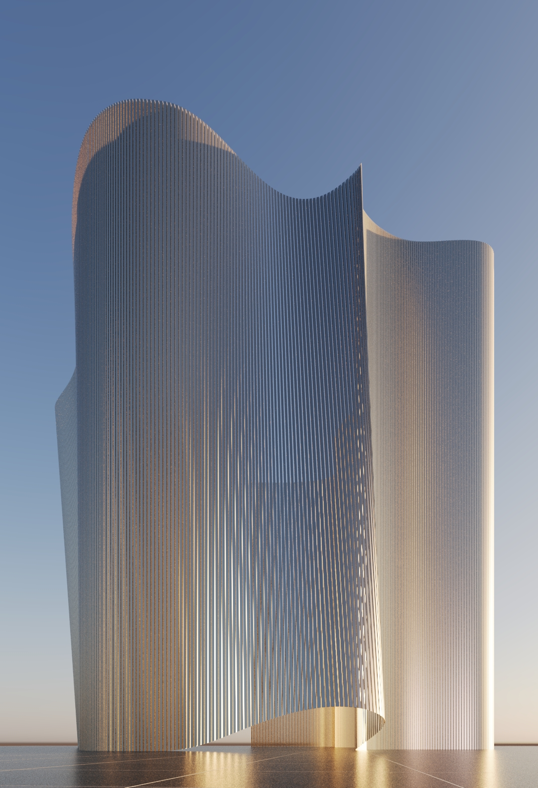
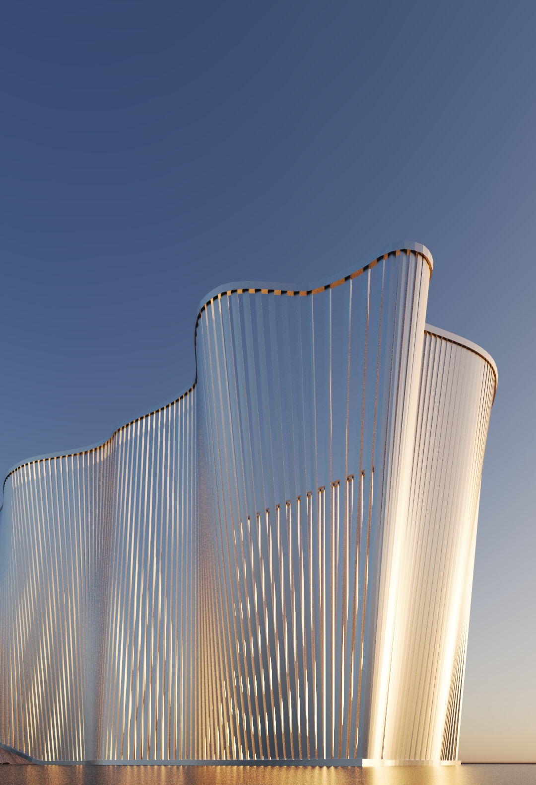
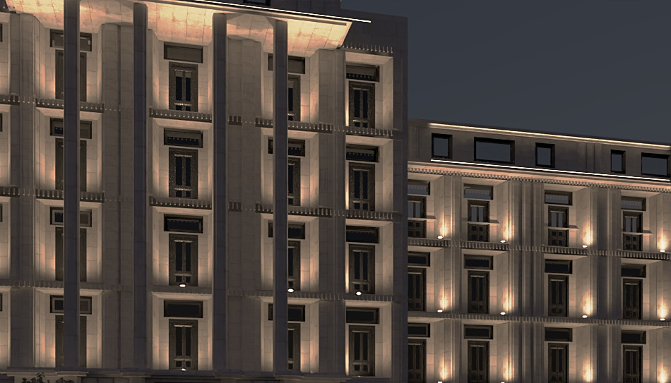
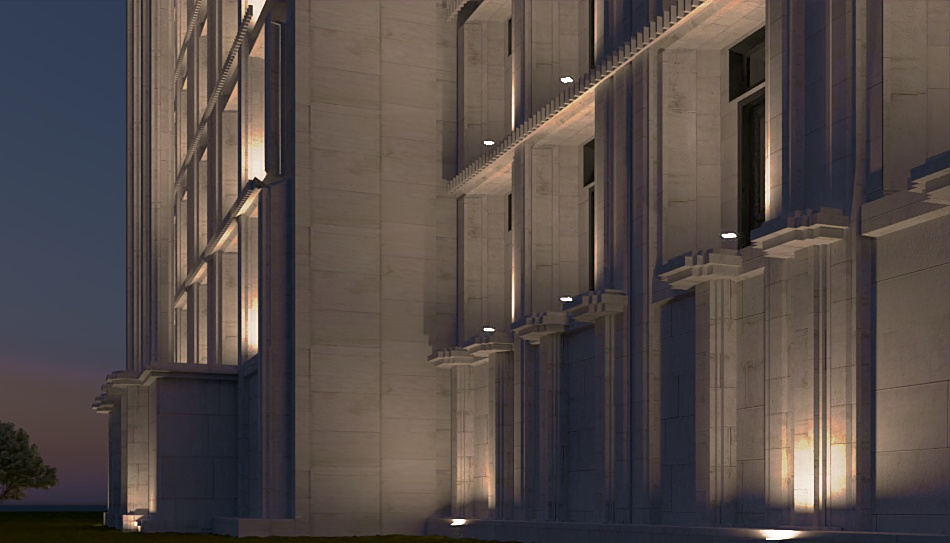
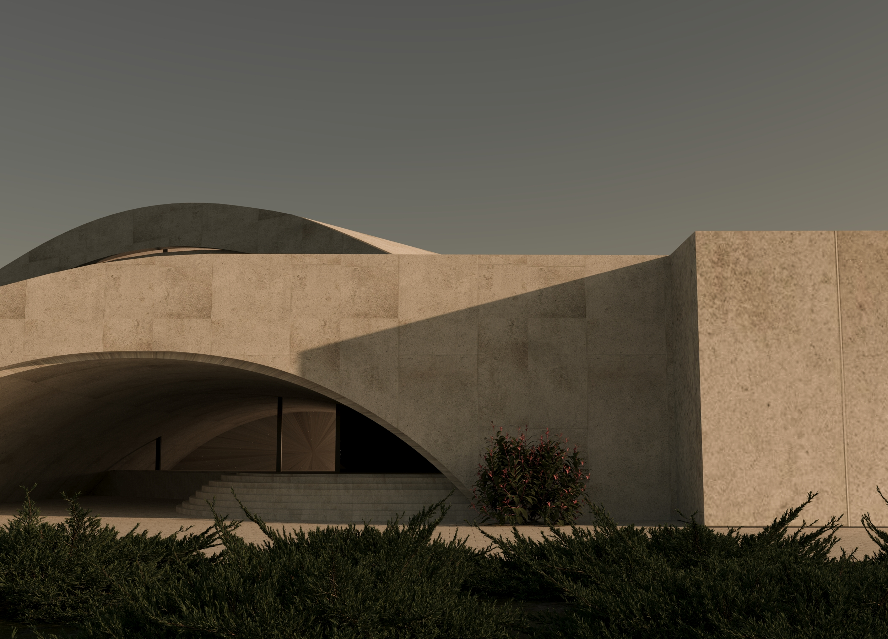

Концепты
Творческие работы и CGI-эксперименты Этот раздел — мое личное творческое пространство и площадка для архитектурных экспериментов. Здесь собраны визуализации и концепт-арты, созданные для оттачивания навыков моделирования и рендеринга в 3ds Max. Для меня это в первую очередь работа с атмосферой кадра: поиск идеальных ракурсов, усложнение геометрии, настройка реалистичного света в разное время суток и создание кинематографичной графики.




